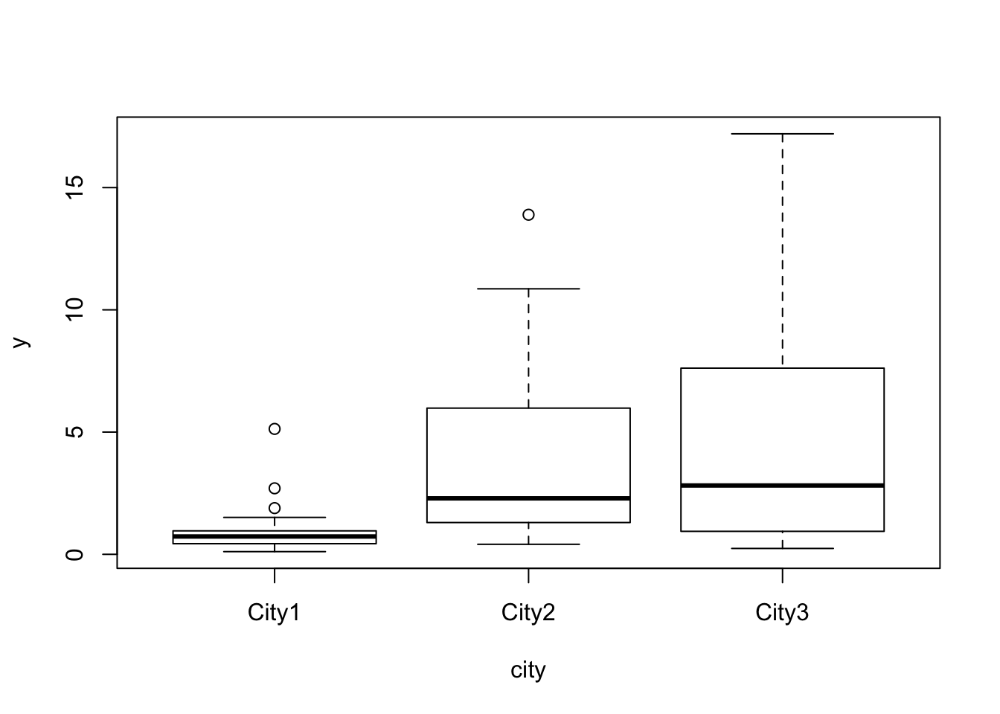
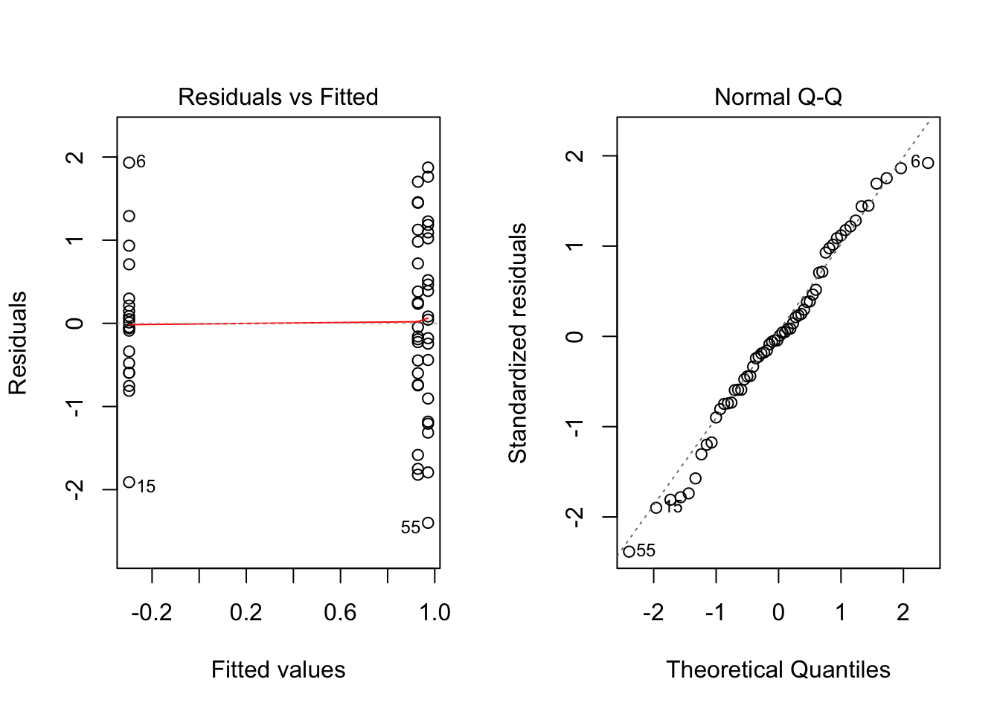

Exercise Four
Ex-1: Chlorine levels in cities
Independent measurements of chlorine (ppm parts per million) were taken from 3 large cities:
City1 City2 City3
1 0.46 1.21 0.44
2 0.92 10.86 0.71
3 0.86 2.09 2.87
4 0.33 6.76 0.81
5 0.53 3.20 7.34
6 5.13 2.02 2.21
7 1.51 2.16 9.00
8 1.00 0.44 17.20
9 0.70 7.80 2.76
10 1.89 1.20 1.07
11 0.68 1.39 2.07
12 0.71 2.42 1.70
13 0.41 1.62 7.89
14 0.78 10.78 0.79
15 0.11 3.25 0.24
16 2.70 0.41 4.44
17 0.41 0.52 15.40
18 0.75 3.71 4.21
19 0.81 5.20 8.63
20 0.35 13.89 3.90- Load the city.rdata which is available on Fronter.
Before analyzing the data it is best to “stack” the data into two columns, a response column “y” and a city factor column “city”. By using the stack() function in R you can restructure the city data by
- Use the
colnames()function to rename the variables as “y” and “city”.
- Assume an ANOVA-model with chlorine as response and city as a factor. What assumptions do you make?
The model assumptions are:
\[y_{ij} = \mu_i + \epsilon_{ij}\]
where the error terms are assumed independent and identically distributed \(\epsilon_{ij} \sim N(0, \sigma^2)\). Further \(\mu_i\) is the expected chlorine level in city \(i\).
- Make a box-plot of the data. Describe the variabilities between cities and within cities.

City 1 seems to have both the lowest average chlorine levels and the smallest variability in the measurements. Cities 2 and 3 are quite similar with both higher means and variability.
- Fit the model and performa a residual analysis. Comment on the model fit.

The residual analysis reveals two problems: 1) Non-constant variability, which was also observed in the boxplot, and 2) A skeewed and non-normal distribution for the residuals with a heavy tail to the right.
Make a log-transformation of \(y\) to create the variable
logy, and add the new variable to your data set by:Fit a new model with
logyas response and check the model fit again.

Both problems from the previous model appear to be corrected. We continue with this model.
- Estimate all model parameters from the latter model. Explain what the parameters measure given the paramtrization of your choice (See lecture notes from Feb 16th on parametrizations).
The ANOVA analysis using contr.treatment parametrization:
Call:
lm(formula = logy ~ city, data = citydata)
Residuals:
Min 1Q Median 3Q Max
-2.39867 -0.59544 -0.01755 0.71218 1.93257
Coefficients:
Estimate Std. Error t value Pr(>|t|)
(Intercept) -0.2975 0.2308 -1.289 0.202656
city(City2) 1.2261 0.3264 3.757 0.000407 ***
city(City3) 1.2690 0.3264 3.888 0.000266 ***
---
Signif. codes: 0 '***' 0.001 '**' 0.01 '*' 0.05 '.' 0.1 ' ' 1
s: 1.032 on 57 degrees of freedom
Multiple R-squared: 0.2549,
Adjusted R-squared: 0.2287
F-statistic: 9.748 on 2 and 57 DF, p-value: 0.0002283 Anova Table (Type II tests)
Response: logy
Sum Sq Df F value Pr(>F)
city 20.771 2 9.7484 0.0002283 ***
Residuals 60.724 57
---
Signif. codes: 0 '***' 0.001 '**' 0.01 '*' 0.05 '.' 0.1 ' ' 1We observe that \(R^2 = 0.25\) indicating that there is still a lot of unexplained variability in the response. We get the following estimates for the city means of log(chlorine)-levels using this parametrization (city 1 is reference city):
\(\mu_1 = \mu =\) -0.3
\(\mu_2 = \mu + \alpha_2 =\) 0.93
\(\mu_3 = \mu + \alpha_3 =\) 0.97
The estimate of the error variance is \(\hat{\sigma}^2 = MSE= SSE/(N-3) = 60.724/57 = 1.065\).
As we see from above, the “intercept” \(\mu\) is the expected log-chlorine level for city 1. The \(\alpha_2\) is the difference between city 1 and city 2, and \(\alpha_3\) is the difference between city 1 and city 3. The \(\sigma^2\) is the variance for log-chlorine levels measured in the same city.
- State the hypotheses for testing whether the expected chlorine levels differ between the cities, choose a test level \(\alpha\) and perform the test. What is the conclusion?
The hypotheses are:
\[H_0: \mu_1 = \mu_2 = \mu_3\] versus \[H_1:\mu_i \neq\mu_{i'}\] for at least two different cities \(i\) and \(i'\).
Note:This is by the chosen parametrization equivalent to testing
\[H_0: \alpha_2 = \alpha_3 = 0\] versus \[H_1:\alpha_i\neq0\] for at least one \(i \in \{2,3\}\).
For test-level \(\alpha=0.05\) we reject the null-hypothesis if \(F>F_{\alpha, 2, 57}\) or if the p-value is smaller than 0.05. Here we observe a very small p-value and reject the null-hypothesis. We claim that the expected log-chlorine levels differ between at least two of the cities, and from the observed means we know that cities 1 and 3 are significantly different since they have the largest observed difference in means. There may also be a significant difference between cities 1 and 2, and 2 and 3, but this should be checked by a pair-wise contrast.
Ex-2: Data from the NSR education test
The Norwegian Centre for Science Recruitment (NSR) has an online “education test” where youths may answer a questionnaire to check their so-called cognitive types, their science interest, their preferred learning methods and their interest to various science subjects. The test suggests different ares within the STEM (Science, Technology, Engineering and Mathematics) within which the youth may find suitable work.
We have an excerpt of these data which can be downloaded from Fronter as the nsr.rdata file. The data.frame NSRdata contains two variables, Science and Age:
Science Age
101 4.2 16
102 4.2 16
103 4.2 16
104 3.0 19
105 2.8 16“Science” is an average liking score (scale 1-6) to various STEM-subjects, and “Age” is a factor indicating different age-groups:
- 1: 1-12 yrs
- 13: 13-15 yrs
- 16: 16-19 yrs
- 19: 19-29 yrs
30: 30 + yrs
Perform an analysis of the NSR data to check whether Age influences the liking to STEM subjects. State the model, fit the model, check model assumptions, test hypotheses, and give model critique. Write a short summary of the results.
Answer will come later.